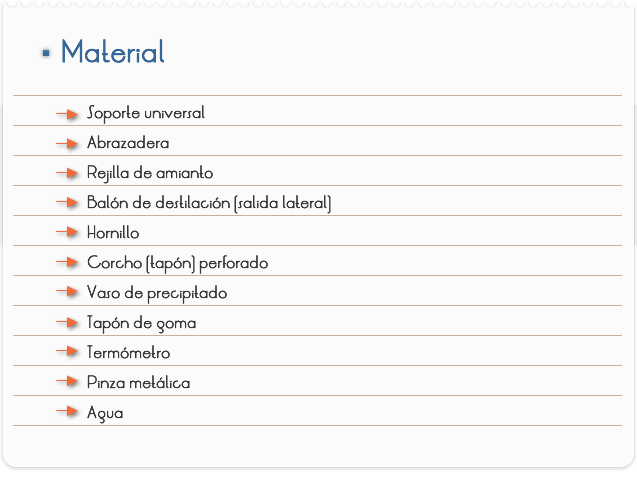
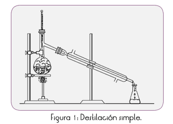
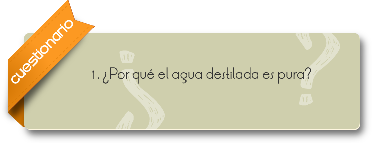

Introducción
El agua destilada es aquella a la que se le ha eliminado prácticamente la totalidad de impurezas e iones mediante destilación (el agua llega a su punto de ebullición y se recogen sus vapores, condensándolos). Un montaje típico de laboratorio para llevar a cabo la destilación consta de un matraz, un condensador y otro matraz (en la figura un Erlenmeyer) para recoger el destilado.
Objetivo
Producir agua destilada.

1. Montar el sistema según la Figura 1.
2. Colocar agua de la llave hasta la mitad de la capacidad del balón
3. Calentarla hasta la ebullición.
4. Recoger en el vaso de precipitado el líquido destilado.


RESULTADOS Y CONCLUSIONES
El vapor que se produce en la ebullición del agua es enfriado en el condensador y se condensa. Este líquido condensado es el agua destilada. Esta agua es pura, porque el vapor que es producido en la ebullición no contiene ninguna de las posibles impurezas sólidas, disueltas o en suspensión en el agua de la llave.